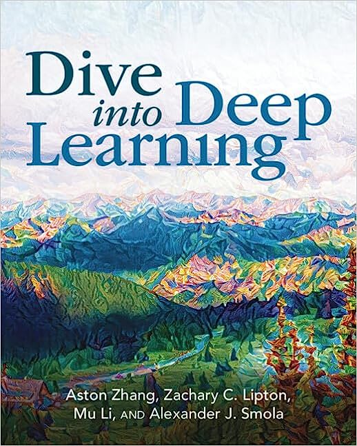

Dive into Deep Learning
Aston Zhang, Zachary C. Lipton, Mu Li, and Alexander J. Smola
PyTorch Edition

Preface
About This Book
One Medium Combining Code, Math, and HTML
Learning by Doing
Content and Structure
Code
Acknowledgments
Summary
Exercises
Installation
Installing Miniconda
Installing the Deep Learning Framework and the d2l Package
Downloading and Running the Code
Notation
Numerical Objects
Set Theory
Functions and Operators
Calculus
Probability and Information Theory
1. Introduction
1.1 A Motivating Example
1.2 Key Components
1.2.1 Data
1.2.2 Models
1.2.3 Objective Functions
1.2.4 Optimization Algorithms
1.3 Kinds of Machine Learning Problems
1.3.1 Supervised Learning
1.3.1.1 Regression
1.3.1.2 Classification
1.3.1.3 Tagging
1.3.1.4 Search
1.3.1.5 Recommender Systems
1.3.1.6 Sequence Learning
1.3.2 Unsupervised and Self-Supervised Learning
1.3.3 Interacting with an Environment
1.3.4 Reinforcement Learning
1.4 Roots
1.5 The Road to Deep Learning
1.6 Success Stories
1.7 The Essence of Deep Learning
1.8 Summary
1.9 Exercises
2. Preliminaries
2.1 Data Manipulation
2.1.1 Getting Started
2.1.2 Indexing and Slicing
2.1.3 Operations
2.1.4 Broadcasting
2.1.5 Saving Memory
2.1.6 Conversion to Other Python Objects
2.1.7 Summary
2.1.8 Exercises
2.2 Data Preprocessing
2.2.1 Reading the Dataset
2.2.2 Data Preparation
2.2.3 Conversion to the Tensor Format
2.2.4 Discussion
2.2.5 Exercises
2.3 Linear Algebra
2.3.1 Scalars
2.3.2 Vectors
2.3.3 Matrices
2.3.4 Tensors
2.3.5 Basic Properties of Tensor Arithmetic
2.3.6 Reduction
2.3.7 Non-Reduction Sum
2.3.8 Dot Products
2.3.9 Matrix-Vector Products
2.3.10 Matrix-Matrix Multiplication
2.3.11 Norms
2.4. Calculus
2.4.1 Derivatives and Differentiation
2.4.2 Visualization Utilities
2.4.3 Partial Derivatives and Gradients
2.4.4 Chain Rule
2.4.5 Discussion
2.4.6 Exercises
2.5 Automatic Differentiation
2.5.1 A Simple Function
2.5.2 Backward for Non-Scalar Variables
2.5.3 Detaching Computation
2.5.4 Gradients and Python Control Flow
2.5.5 Discussion
2.5.6 Exercises
2.6 Probability and Statistics
2.6.1 A Simple Example: Tossing Coins
2.6.2 A More Formal Treatment
2.6.3 Random Variables
2.6.4 Multiple Random Variables
2.6.5 An Example
2.6.6 Expectations
2.6.7 Discussion
2.6.8 Exercises
2.7 Documentation
2.7.1 Functions and Classes in a Module
2.7.2 Specific Functions and Classes
3. Linear Neural Networks for Regression
3.1 Linear Regression
3.1.1 Basics
3.1.2 Vectorization for Speed
3.1.3 The Normal Distribution and Squared Loss
3.1.4 Linear Regression as a Neural Network
3.1.5 Summary
3.1.6 Exercises
3.2 Object-Oriented Design for Implementation
3.2.1 Utilities
3.2.2 Models
3.2.3 Data
3.2.4 Training
3.2.5 Summary
3.2.6 Exercises
3.3 Synthetic Regression Data
3.3.1 Generating the Dataset
3.3.2 Reading the Dataset
3.3.3 Concise Implementation of the Data Loader
3.3.4 Summary
3.3.5 Exercises
3.4 Linear Regression Implementation from Scratch
3.4.1 Defining the Model
3.4.2 Defining the Loss Function
3.4.3 Defining the Optimization Algorithm
3.4.4 Training
3.4.5 Summary
3.4.6 Exercises
3.5 Concise Implementation of Linear Regression
3.5.1 Defining the Model
3.5.2 Defining the Loss Function
3.5.3 Defining the Optimization Algorithm
3.5.4 Training
3.5.5 Summary
3.5.6 Exercises
3.6 Generalization
3.6.1 Training Error and Generalization Error
3.6.2 Underfitting or Overfitting?
3.6.3 Model Selection
3.6.4 Summary
3.6.5 Exercises
3.7 Weight Decay
3.7.1 Norms and Weight Decay
3.7.2 High-Dimensional Linear Regression
3.7.3 Implementation from Scratch
3.7.4 Concise Implementation
3.7.5 Summary
3.7.6 Exercises
4. Linear Neural Networks for Classification
4.1 Softmax Regression
4.1.1 Classification
4.1.2 Loss Function
4.1.3 Information Theory Basics
4.1.4 Summary and Discussion
4.1.5 Exercises
4.2 The Image Classification Dataset
4.2.1 Loading the Dataset
4.2.2 Reading a Minibatch
4.2.3 Visualization
4.2.4 Summary
4.2.5 Exercises
4.3 The Base Classification Model
4.3.1 The `Classifier` Class
4.3.2 Accuracy
4.3.3 Summary
4.3.4 Exercises
4.4 Softmax Regression Implementation from Scratch
4.4.1 The Softmax
4.4.2 The Model
4.4.3 The Cross-Entropy Loss
4.4.4 Training
4.4.5 Prediction
4.4.6 Summary
4.4.7 Exercises
4.5 Concise Implementation of Softmax Regression
4.5.1 Defining the Model
4.5.2 Softmax Revisited
4.5.3 Training
4.5.4 Summary
4.5.5 Exercises
4.6 Generalization in Classification
4.6.1 The Test Set
4.6.2 Test Set Reuse
4.6.3 Statistical Learning Theory
4.6.4 Summary
4.6.5 Exercises
4.7 Environment and Distribution Shift
4.7.1 Types of Distribution Shift
4.7.2 Examples of Distribution Shift
4.7.3 Correction of Distribution Shift
4.7.4 A Taxonomy of Learning Problems
4.7.5 Fairness, Accountability, and Transparency in Machine Learning
4.7.6 Summary
4.7.7 Exercises
5. Multilayer Perceptrons
5.1 Multilayer Perceptrons
5.1.1 Hidden Layers
5.1.2 Activation Functions
5.1.3 Summary and Discussion
5.1.4 Exercises
5.2 Implementation of Multilayer Perceptrons
5.2.1 Implementation from Scratch
5.2.2 Concise Implementation
5.2.3 Summary
5.2.4 Exercises
5.3 Forward Propagation, Backward Propagation, and Computational Graphs
5.3.1 Forward Propagation
5.3.2 Computational Graph of Forward Propagation
5.3.3 Backpropagation
5.3.4 Training Neural Networks
5.3.5 Summary
5.3.6 Exercises
5.4 Numerical Stability and Initialization
5.4.1 Vanishing and Exploding Gradients
5.4.2 Parameter Initialization
5.4.3 Summary
5.4.4 Exercises
5.5 Generalization in Deep Learning
5.5.1 Revisiting Overfitting and Regularization
5.5.2 Inspiration from Nonparametrics
5.5.3 Early Stopping
5.5.4 Classical Regularization Methods for Deep Networks
5.5.5 Summary
5.5.6 Exercises
5.6 Dropout
5.6.1 Dropout in Practice
5.6.2 Implementation from Scratch
5.6.3 Concise Implementation
5.6.4 Summary
5.6.5 Exercises
5.7 Predicting House Prices on Kaggle
5.7.1 Downloading Data
5.7.2 Kaggle
5.7.3 Accessing and Reading the Dataset
5.7.4 Data Preprocessing
5.7.5 Error Measure
5.7.6 $k$-Fold Cross-Validation
5.7.7 Model Selection
5.7.8 Submitting Predictions on Kaggle
5.7.9 Summary and Discussion
5.7.10 Exercises
6. Builders' Guide
6.1 Layers and Modules
6.1.1 A Custom Module
6.1.2 The Sequential Module
6.1.3 Executing Code in the Forward Propagation Method
6.1.4 Summary
6.1.5 Exercises
6.2 Parameter Management
6.2.1 Parameter Access
6.2.2 Tied Parameters
6.2.3 Summary
6.2.4 Exercises
6.3 Parameter Initialization
6.3.1 Built-in Initialization
6.3.2 Summary
6.3.3 Exercises
6.4 Lazy Initialization
6.4.1 Summary
6.4.2 Exercises
6.5 Custom Layers
6.5.1 Layers without Parameters
6.5.2 Layers with Parameters
6.5.3 Summary
6.5.4 Exercises
6.6 File I/O
6.6.1 Loading and Saving Tensors
6.6.2 Loading and Saving Model Parameters
6.6.3 Summary
6.6.4 Exercises
6.7 GPUs
6.7.1 Computing Devices
6.7.2 Tensors and GPUs
6.7.3 Neural Networks and GPUs
6.7.4 Summary
6.7.5 Exercises
7. Convolutional Neural Networks
11.9.2 Encoder-Decoder
11.9.3 Decoder-Only
11.9.4 Scalability
11.9.5 Large Language Models
11.9.6 Summary and Discussion
11.9.7 Exercises
12. Optimization Algorithms
12.1 Optimization and Deep Learning
12.1.1 Goal of Optimization
12.1.2 Optimization Challenges in Deep Learning
12.1.3 Summary
12.1.4 Exercises
12.2 Convexity
12.2.1 Definitions
12.2.2 Properties
12.2.3 Constraints
12.2.4 Summary
12.2.5 Exercises
12.3 Gradient Descent
12.3.1 One-Dimensional Gradient Descent
12.3.2 Multivariate Gradient Descent
12.3.3 Adaptive Methods
12.3.4 Summary
12.3.5 Exercises
12.4 Stochastic Gradient Descent
12.4.1 Stochastic Gradient Updates
12.4.2 Dynamic Learning Rate
12.4.3 Convergence Analysis for Convex Objectives
12.4.4 Stochastic Gradients and Finite Samples
12.4.5 Summary
12.4.6 Exercises
12.5 Minibatch Stochastic Gradient Descent
12.5.1 Vectorization and Caches
12.5.2 Minibatches
12.5.3 Reading the Dataset
12.5.4 Implementation from Scratch
12.5.5 Concise Implementation
12.5.6 Summary
12.5.7 Exercises
12.6 Momentum
12.6.1 Basics
12.6.2 Practical Experiments
12.6.3 Theoretical Analysis
12.6.4 Summary
12.6.5 Exercises
12.7 Adagrad
12.7.1 Sparse Features and Learning Rates
12.7.2 Preconditioning
12.7.3 The Algorithm
12.7.4 Implementation from Scratch
12.7.5 Concise Implementation
12.7.6 Summary
12.7.7 Exercises
12.8 RMSProp
12.8.1 The Algorithm
12.8.2 Implementation from Scratch
12.8.3 Concise Implementation
12.8.4 Summary
12.8.5 Exercises
12.9 Adadelta
12.9.1 The Algorithm
12.9.2 Implementation
12.9.3 Summary
12.9.4 Exercises
12.10 Adam
12.10.1 The Algorithm
12.10.2 Implementation
12.10.3 Yogi
12.10.4 Summary
12.10.5 Exercises
12.11 Learning Rate Scheduling
12.11.1 Toy Problem
12.11.2 Schedulers
12.11.3 Policies
12.11.4 Summary
12.11.5 Exercises
13. Computational Performance
13.1 Compilers and Interpreters
13.1.1 Symbolic Programming
13.1.2 Hybrid Programming
13.1.3 Hybridizing the `Sequential` Class
13.1.4 Summary
13.1.5 Exercises
13.2 Asynchronous Computation
13.2.1 Asynchrony via Backend
13.2.2 Barriers and Blockers
13.2.3 Improving Computation
13.2.4 Summary
13.2.5 Exercises
13.3 Automatic Parallelism
13.3.1 Parallel Computation on GPUs
13.3.2 Parallel Computation and Communication
13.3.4 Exercises
13.4 Hardware
13.4.1 Computers
13.4.2 Memory
13.4.3 Storage
13.4.4 CPUs
13.4.5 GPUs and other Accelerators
13.4.6 Networks and Buses
13.4.7 More Latency Numbers
13.4.8 Summary
13.4.9 Exercises
13.5 Training on Multiple GPUs
13.5.1 Splitting the Problem
13.5.2 Data Parallelism
13.5.3 A Toy Network
13.5.4 Data Synchronization
13.5.5 Distributing Data
13.5.6 Training
13.5.7 Summary
13.5.8 Exercises
13.6 Concise Implementation for Multiple GPUs
13.6.1 A Toy Network
13.6.2 Network Initialization
13.6.3 Training
13.6.4 Summary
13.6.5 Exercises
13.7 Parameter Servers
13.7.1 Data-Parallel Training
13.7.2 Ring Synchronization
13.7.3 Multi-Machine Training
13.7.4 Key-Value Stores
13.7.5 Summary
13.7.6 Exercises
14. Computer Vision
14.1 Image Augmentation
14.1.1 Common Image Augmentation Methods
14.1.2 Training with Image Augmentation
14.1.3 Summary
14.1.4 Exercises
14.2 Fine-Tuning
14.2.1 Steps
14.2.2 Hot Dog Recognition
14.2.3 Summary
14.2.4 Exercises
14.3 Object Detection and Bounding Boxes
14.3.1 Bounding Boxes
14.3.2 Summary
14.3.3 Exercises
14.4 Anchor Boxes
14.4.1 Generating Multiple Anchor Boxes
14.4.2 Intersection over Union (IoU)
14.4.3 Labeling Anchor Boxes in Training Data
14.4.4 Predicting Bounding Boxes with Non-Maximum Suppression
14.4.5 Summary
14.4.6 Exercises
14.5 Multiscale Object Detection
14.5.1 Multiscale Anchor Boxes
14.5.2 Multiscale Detection
14.5.3 Summary
14.5.4 Exercises
14.6 The Object Detection Dataset
14.6.1 Downloading the Dataset
14.6.2 Reading the Dataset
14.6.3 Demonstration
14.6.4 Summary
14.6.5 Exercises
14.7 Single Shot Multibox Detection
14.7.1 Model
14.7.2 Training
14.7.3 Prediction
14.7.4 Summary
14.7.5 Exercises
14.8 Region-based CNNs (R-CNNs)
14.8.1 R-CNNs
14.8.2 Fast R-CNN
14.8.3 Faster R-CNN
14.8.4 Mask R-CNN
14.8.5 Summary
14.8.6 Exercises
14.9 Semantic Segmentation and the Dataset
14.9.1 Image Segmentation and Instance Segmentation
14.9.2 The Pascal VOC2012 Semantic Segmentation Dataset
14.9.3 Summary
14.9.4 Exercises
14.10 Transposed Convolution
14.10.1 Basic Operation
14.10.2 Padding, Strides, and Multiple Channels
14.10.3 Connection to Matrix Transposition
14.10.4 Summary
14.10.5 Exercises
14.11 Fully Convolutional Networks
14.11.1 The Model
14.11.2 Initializing Transposed Convolutional Layers
14.11.3 Reading the Dataset
14.11.4 Training
14.11.5 Prediction
14.11.6 Summary
14.11.7 Exercises
14.12 Neural Style Transfer
14.12.1 Method
14.12.2 Reading the Content and Style Images
14.12.3 Preprocessing and Postprocessing
14.12.4 Extracting Features
14.12.5 Defining the Loss Function
14.12.6 Initializing the Synthesized Image
14.12.7 Training
14.12.8 Summary
14.12.9 Exercises
14.13 Image Classification (CIFAR-10) on Kaggle
14.13.1 Obtaining and Organizing the Dataset
14.13.2 Image Augmentation
14.13.3 Reading the Dataset
14.13.4 Defining the Model
14.13.5 Defining the Training Function
14.13.6 Training and Validating the Model
14.13.7 Classifying the Testing Set and Submitting Results on Kaggle
14.13.8 Summary
14.13.9 Exercises
14.14 Dog Breed Identification (ImageNet Dogs) on Kaggle
14.14.1 Obtaining and Organizing the Dataset
14.14.2 Image Augmentation
14.14.3 Reading the Dataset
14.14.4 Fine-Tuning a Pretrained Model
14.14.5 Defining the Training Function
14.14.6 Training and Validating the Model
14.14.7 Classifying the Testing Set and Submitting Results on Kaggle
14.14.8 Summary
14.14.9 Exercises
15. Natural Language Processing: Pretraining
15.1 Word Embedding (word2vec)
15.1.1 One-Hot Vectors Are a Bad Choice
15.1.2 Self-Supervised word2vec
15.1.3 The Skip-Gram Model
15.1.4 The Continuous Bag of Words (CBOW) Model
15.1.5 Summary
15.1.6 Exercises
15.2 Approximate Training
15.2.1 Negative Sampling
15.2.2 Hierarchical Softmax
15.2.3 Summary
15.2.4 Exercises
15.3 The Dataset for Pretraining Word Embeddings
15.3.1 Reading the Dataset
15.3.2 Subsampling
15.3.3 Extracting Center Words and Context Words
15.3.4 Negative Sampling
15.3.5 Loading Training Examples in Minibatches
15.3.6 Putting It All Together
15.3.7 Summary
15.3.8 Exercises
15.4 Pretraining word2vec
15.4.1 The Skip-Gram Model
15.4.2 Training
15.4.3 Applying Word Embeddings
15.4.4 Summary
15.4.5 Exercises
15.5 Word Embedding with Global Vectors (GloVe)
15.5.1 Skip-Gram with Global Corpus Statistics
15.5.2 The GloVe Model
15.5.3 Interpreting GloVe from the Ratio of Co-occurrence Probabilities
15.5.4 Summary
15.5.5 Exercises
15.6 Subword Embedding
15.6.1 The fastText Model
15.6.2 Byte Pair Encoding
15.6.3 Summary
15.6.4 Exercises
15.7 Word Similarity and Analogy
15.7.1 Loading Pretrained Word Vectors
15.7.2 Applying Pretrained Word Vectors
15.7.3 Summary
15.7.4 Exercises
15.8 Bidirectional Encoder Representations from Transformers (BERT)
15.8.1 From Context-Independent to Context-Sensitive
15.8.2 From Task-Specific to Task-Agnostic
15.8.3 BERT: Combining the Best of Both Worlds
15.8.4 Input Representation
15.8.5 Pretraining Tasks
15.8.6 Putting It All Together
15.8.7 Summary
15.8.8 Exercises
15.9 The Dataset for Pretraining BERT
15.9.1 Defining Helper Functions for Pretraining Tasks
15.9.2 Transforming Text into the Pretraining Dataset
15.9.3 Summary
15.9.4 Exercises
15.10 Pretraining BERT
15.10.1 Pretraining BERT
15.10.2 Representing Text with BERT
15.10.3 Summary
15.10.4 Exercises
16. Natural Language Processing: Applications
16.1 Sentiment Analysis and the Dataset
16.1.1 Reading the Dataset
16.1.2 Preprocessing the Dataset
16.1.3 Creating Data Iterators
16.1.4 Putting It All Together
16.1.5 Summary
16.1.6 Exercises
16.2 Sentiment Analysis: Using Recurrent Neural Networks
16.2.1 Representing Single Text with RNNs
16.2.2 Loading Pretrained Word Vectors
16.2.3 Training and Evaluating the Model
16.2.4 Summary
16.2.5 Exercises
16.3 Sentiment Analysis: Using Convolutional Neural Networks
16.3.1 One-Dimensional Convolutions
16.3.2 Max-Over-Time Pooling
16.3.3 The textCNN Model
16.3.4 Summary
16.3.5 Exercises
16.4 Natural Language Inference and the Dataset
16.4.1 Natural Language Inference
16.4.2 The Stanford Natural Language Inference (SNLI) Dataset
16.4.3 Summary
16.4.4 Exercises
16.5 Natural Language Inference: Using Attention
16.5.1 The Model
16.5.2 Training and Evaluating the Model
16.5.3 Summary
16.5.4 Exercises
16.6 Fine-Tuning BERT for Sequence-Level and Token-Level Applications
16.6.1 Single Text Classification
16.6.2 Text Pair Classification or Regression
16.6.3 Text Tagging
16.6.4 Question Answering
16.6.5 Summary
16.6.6 Exercises
16.7 Natural Language Inference: Fine-Tuning BERT
16.7.1 Loading Pretrained BERT
16.7.2 The Dataset for Fine-Tuning BERT
16.7.3 Fine-Tuning BERT
16.7.4 Summary
16.7.5 Exercises
17. Reinforcement Learning
17.1 Markov Decision Process (MDP)
17.1.1 Definition of an MDP
17.1.2 Return and Discount Factor
17.1.3 Discussion of the Markov Assumption
17.1.4 Summary
17.1.5 Exercises
17.2 Value Iteration
17.2.1 Stochastic Policy
17.2.2 Value Function
17.2.3 Action-Value Function
17.2.4 Optimal Stochastic Policy
17.2.5 Principle of Dynamic Programming
17.2.6 Value Iteration
17.2.7 Policy Evaluation
17.2.8 Implementation of Value Iteration
17.2.9 Summary
17.2.10 Exercises
17.3 Q-Learning
17.3.1 The Q-Learning Algorithm
17.3.2 An Optimization Problem Underlying Q-Learning
17.3.3 Exploration in Q-Learning
17.3.4 The “Self-correcting” Property of Q-Learning
17.3.5 Implementation of Q-Learning
17.3.6 Summary
17.3.7 Exercises
18. Gaussian Processes
18.1 Introduction to Gaussian Processes
18.1.1 Summary
18.1.2 Exercises
18.2 Gaussian Process Priors
18.2.1 Definition
18.2.2 A Simple Gaussian Process
18.2.3 From Weight Space to Function Space
18.2.4 The Radial Basis Function (RBF) Kernel
18.2.5 The Neural Network Kernel
18.2.6 Summary
18.2.7 Exercises
18.3 Gaussian Process Inference
18.3.1 Posterior Inference for Regression
18.3.2 Equations for Making Predictions and Learning Kernel Hyperparameters in GP Regression
18.3.3 Interpreting Equations for Learning and Predictions
18.3.4 Worked Example from Scratch
18.3.5 Making Life Easy with GPyTorch
18.3.6 Summary
18.3.7 Exercises
18.3.7 Exercises
19. Hyperparameter Optimization
19.1 What Is Hyperparameter Optimization?
19.1.1 The Optimization Problem
19.1.2 Random Search
19.1.3 Summary
19.1.4 Exercises
19.2 Hyperparameter Optimization API
19.2.1 Searcher
19.2.2 Scheduler
19.2.3 Tuner
19.2.4 Bookkeeping the Performance of HPO Algorithms
19.2.5 Example: Optimizing the Hyperparameters of a Convolutional Neural Network
19.2.6 Comparing HPO Algorithms
19.2.7 Summary
19.2.8 Exercises
19.3 Asynchronous Random Search
19.3.1 Objective Function
19.3.2 Asynchronous Scheduler
19.3.3 Visualize the Asynchronous Optimization Process
19.3.4 Summary
19.3.5 Exercises
19.4 Multi-Fidelity Hyperparameter Optimization
19.4.1 Successive Halving
19.4.2 Summary
19.5 Asynchronous Successive Halving
19.5.1 Objective Function
19.5.2 Asynchronous Scheduler
19.5.3 Visualize the Optimization Process
19.5.4 Summary
20. Generative Adversarial Networks
20.1 Generative Adversarial Networks
20.1.1 Generate Some "Real" Data
20.1.2 Generator
20.1.3 Discriminator
20.1.4 Training
20.1.5 Summary
20.1.6 Exercises
20.2 Deep Convolutional Generative Adversarial Networks
20.2.1 The Pokemon Dataset
20.2.2 The Generator
20.2.3 Discriminator
20.2.4 Training
20.2.5 Summary
20.2.6 Exercises
21. Recommender Systems
21.1 Overview of Recommender Systems
21.1.1 Collaborative Filtering
21.1.2 Explicit Feedback and Implicit Feedback
21.1.3 Recommendation Tasks
21.1.4 Summary
21.1.5 Exercises
A. Mathematics for Deep Learning
A.1 Geometry and Linear Algebraic Operations
A.1.1 Geometry of Vectors
A.1.2 Dot Products and Angles
A.1.3 Hyperplanes
A.1.4 Geometry of Linear Transformations
A.1.5 Linear Dependence
A.1.6 Rank
A.1.7 Invertibility
A.1.8 Determinant
A.1.9 Tensors and Common Linear Algebra Operations
A.1.10 Summary
A.1.11 Exercises
A.2 Eigendecompositions
A.2.1 Finding Eigenvalues
A.2.2 Decomposing Matrices
A.2.3 Operations on Eigendecompositions
A.2.4 Eigendecompositions of Symmetric Matrices
A.2.5 Gershgorin Circle Theorem
A.2.6 A Useful Application: The Growth of Iterated Maps
A.2.7 Discussion
A.2.8 Summary
A.2.9 Exercises
A.3 Single Variable Calculus
A.3.1 Differential Calculus
A.3.2 Rules of Calculus
A.3.3 Summary
A.3.4 Exercises
A.4 Multivariable Calculus
A.4.1 Higher-Dimensional Differentiation
A.4.2 Geometry of Gradients and Gradient Descent
A.4.3 A Note on Mathematical Optimization
A.4.4 Multivariate Chain Rule
A.4.5 The Backpropagation Algorithm
A.4.6 Hessians
A.4.7 A Little Matrix Calculus
A.4.8 Summary
A.4.9 Exercises
A.5 Integral Calculus
A.5.1 Geometric Interpretation
A.5.2 The Fundamental Theorem of Calculus
A.5.3 Change of Variables
A.5.4 A Comment on Sign Conventions
A.5.5 Multiple Integrals
A.5.6 Change of Variables in Multiple Integrals
A.5.7 Summary
A.5.8 Exercises
A.6 Random Variables
A.6.1 Continuous Random Variables
A.6.2 Summary
A.6.3 Exercises
A.7 Maximum Likelihood
A.7.1 The Maximum Likelihood Principle
A.7.2 Numerical Optimization and the Negative Log-Likelihood
A.7.3 Maximum Likelihood for Continuous Variables
A.7.4 Summary
A.7.5 Exercises
A.8 Distributions
A.8.1 Bernoulli
A.8.2 Discrete Uniform
A.8.3 Continuous Uniform
A.8.4 Binomial
A.8.5 Poisson
A.8.6 Gaussian
A.8.7 Exponential Family
A.8.8 Summary
A.8.9 Exercises
A.9 Naive Bayes
A.9.1 Optical Character Recognition
A.9.2 The Probabilistic Model for Classification
A.9.3 The Naive Bayes Classifier
A.9.4 Training
A.9.5 Summary
A.9.6 Exercises
A.10 Statistics
A.10.1 Evaluating and Comparing Estimators
A.10.2 Conducting Hypothesis Tests
A.10.3 Constructing Confidence Intervals
A.10.4 Summary
A.10.5 Exercises
A.11 Information Theory
A.11.1 Information
A.11.2 Entropy
A.11.3 Mutual Information
A.11.4 Kullback-Leibler Divergence
A.11.5 Cross-Entropy
A.11.6 Summary
A.11.7 Exercises
B. Tools for Deep Learning
B.1 Using Jupyter Notebooks
B.1.1 Editing and Running the Code Locally
B.1.2 Advanced Options
B.1.3 Summary
B.1.4 Exercises
B.2 Using Amazon SageMaker
B.2.1 Signing Up
B.2.2 Creating a SageMaker Instance
B.2.3 Running and Stopping an Instance
B.2.4 Updating Notebooks
B.2.5 Summary
B.2.6 Exercises
B.3 Using AWS EC2 Instances
B.3.1 Creating and Running an EC2 Instance
B.3.2 Installing CUDA
B.3.3 Installing Libraries for Running the Code
B.3.4 Running the Jupyter Notebook remotely
B.3.5 Closing Unused Instances
B.3.6 Summary
B.3.7 Exercises
B.4 Using Google Colab
B.4.1 Summary
B.5 Selecting Servers and GPUs
B.5.1 Selecting Servers
B.5.2 Selecting GPUs
B.5.3 Summary
B.6 Contributing to This Book
B.6.1 Submitting Minor Changes
B.6.2 Proposing Major Changes
B.6.3 Submitting Major Changes
B.6.4 Summary
B.6.5 Exercises
B.7 Utility Functions and Classes
B.8 The d2l API Document
B.8.1 Classes